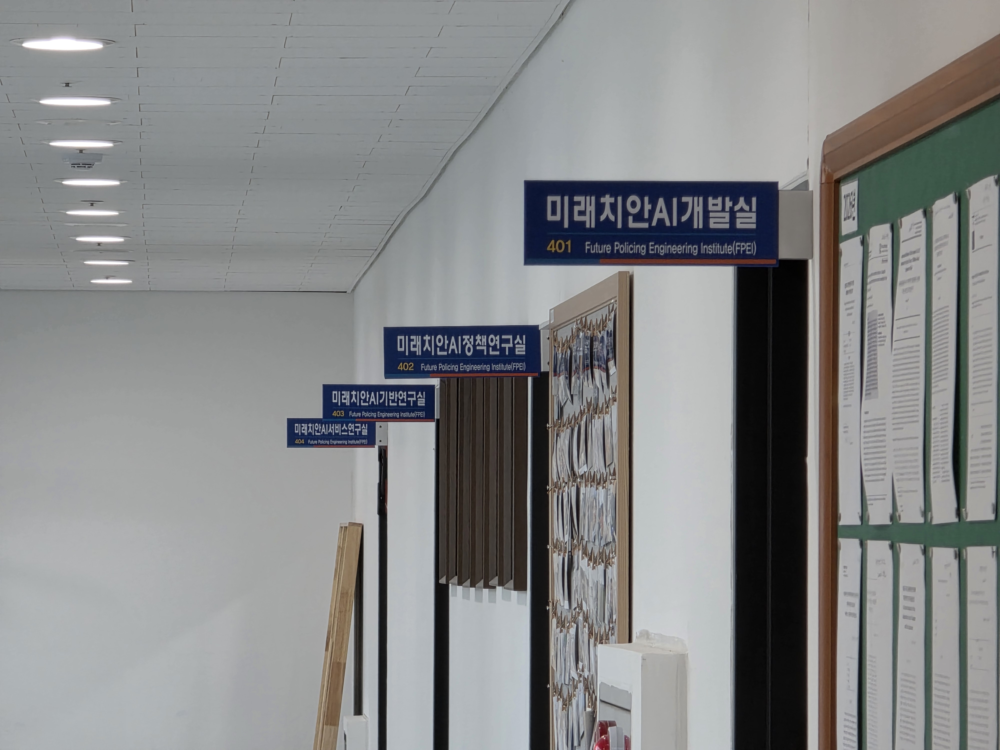
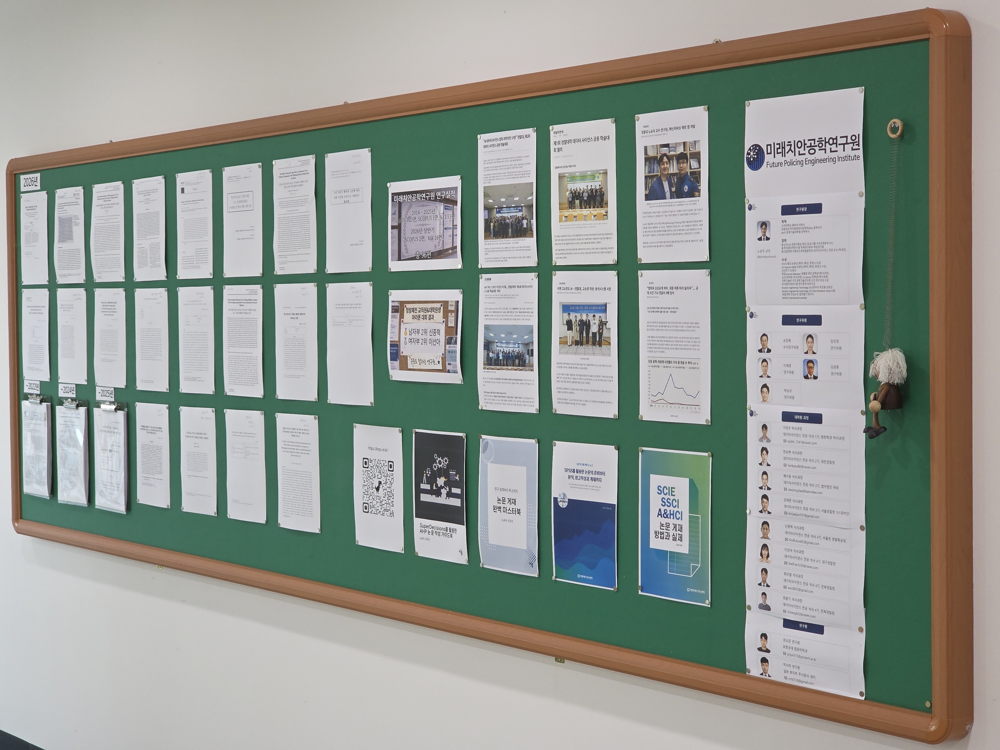
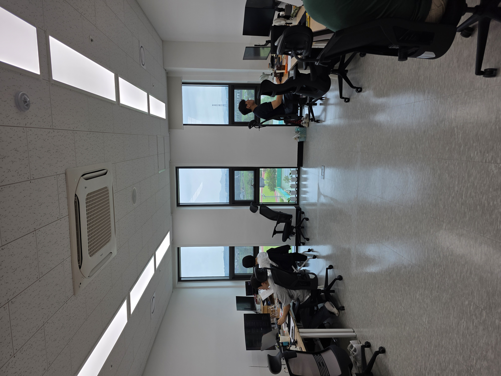
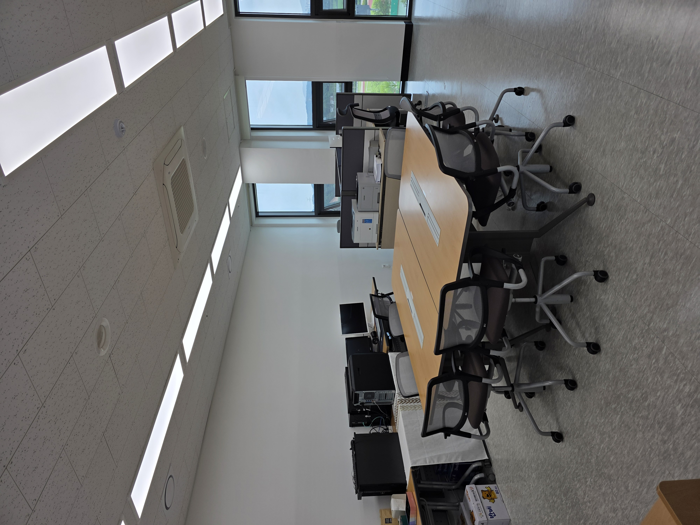

소개
미래치안의 공학적 접근
미래치안공학연구원(FPEI)은 경찰대학의 연구기구로, 치안대학원 과학치안융합학과 데이터사이언스전공을 주축으로 활동하고 있습니다. 연구원의 목표는 경찰학·법학·행정학 등 치안 분야에 통계와 비정형 데이터 분석, AI와 같은 공학적 방법을 결합하여 미래 치안 주제를 데이터로 진단하고 정책으로 설계하는 것입니다.
본원은 미래신호예측, 텍스트 빅데이터 기반 담론 분석, 범죄·정책 의사결정 모델링, AI 치안 응용에 이르는 연구를 수행하고 있습니다. 그 결과 2014년 이후 SCI급 22편을 포함한 90편 이상의 학술논문을 발표하였으며, 최근까지 연간 논문 10편 이상의 연구 성과를 이어가고 있습니다. 또한 경찰청, 치안정책연구소와 공동으로 데이터사이언스 학술대회를 개최하여 학술과 실무의 융합을 위한 노력을 이어가고 있습니다.



